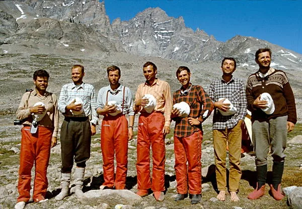

GAMEBOSKOP - iz zafrkancije u legendu
Kako je nastala riječ GAMEBOSKOP koju često čujemo na speleološkim i alpinističkim izletima, što je to i čemu služi pojašnjava nam istaknuti alpinist Vladimir - Dado Mesarić u izvornom tekstu kojeg prenosimo:

Sredina srpnja 1971., istočna obala Grenlanda. Pet članova Prve hrvatske alpinističke ekspedicije „Grenland 71“ muvalo se po baznom logoru na samoj obali Kangerdluqssuatsiaq fjorda. Bili su ispunjeni mirom i zadovoljstvom pobjednika. Pa kako i ne bi: u prvih deset dana ekspedicije (naše prve plave alpinističke na drugi kontinent!) rješen je glavni cilj pohoda – ispenjan je teški i dugački prvenstveni smjer na još neosvojeni Ingolfjeald (2xxx m) – četiri dana uspona, 50 ispenjanih dužina od III do VI, A1, A2, isto toliko dužina u spustu absajlom (11 sati neprekidnog absajlanja...).
Ostala dva člana pohoda gibali su na skijama prema unutrašnjem ledu – ledenjakom obećavajućeg imena: „Thank God Glacier“. U tom su trenutku, vjerojatno na „En ten tini...“, izabrali za cilj jedan od nebrojenih neosvojenih vrhova... U bazi, na obali našeg fjorda neizgovorljivog imena, mir i tišinu remetio je jedino zuj komaraca i pucketanje stoljetnog leda koji se topio u moru. Netko je spomenuo „Ručak“. Teško je odrediti u koje doba dana je to bilo jer je sunce gotovo neprestano na na nebu.
Mogli bi smo probati onu konzervicu koju smo neki dan našli u „Sunčevoj dolini“. Da nije malo prestara? Vjerojatno nije. To je sigurno od Derekove ekspedicije. Od prošlog ljeta. Ai nije tako jako hrđava. A što je uopće u toj konzervi? Juha od kornjačinog mesa. To nisam probao, možda bi smo mogli... „Nijedna zajebancija nije nam strana!“S ovim motom ekspedicije koji je nastao još u tijeku priprema, u veljači, na Velebitu, sve su dvojbe uklonjene i konzerva je donešena u „kuhinju“.
Pazi kaj piše: razmiješati dvije unce u tri pinte vode! Kipuće vode. ?? Koliko je to „unca“, a koliko je to „pinta“? Na konzervi piše da sadrži 6 i ¾ unci... A pinta ti je mjera za čašu piva u „pubovima...“ Dobro, i jedno i drugo ćemo „odoka“!Bazom se raširio miris petroleja sa kuhala: jedna od najljepših uspomena iz brda. Velikih. Nakon nekog vremena, kada se približavao trenutak vrenja...
Dodaj mi ono za hvatanje rajngli – javio se trenutni kuhar. Dakle, ti bi hvataljku za posude... evo, hvataj!Hvataljka za rajngle je poletjela zrakom i bila uhvaćena sigurnom rukom gladnog ekspedicioniste. Ostali započinju laganu konverzaciju - tek da ubiju vrijeme do juhe.
A što bi bilo da nemamo hvataljku za posude? Uzeli bismo prvu stvar koja nam padne pod ruku, a pomaže, to je bar jasno. Na primjer ove čarape koje se suše pored šatora... Ili rupček, iz džepa. Malo mokar od onoga iz nosa. Ne nudite baš prihvatljiva rješenja. Zapravo bi trebalo imati kuhinjsku krpu. Ne sjećam se da sam to vidio na popisima opreme za ekspedicije. Kad se bolje razmisli, hvataljka za vruću posudu je jedan od najvažnijih dijelova opreme. Bez toga si u prilično zafrknutoj situaciji. Kao i bez „jajeta“ za čaj.(1) Točno. Pogotovo u slučajevima kada se kuha na otvorenoj vatri. Tako važan dio opreme zavređuje posebno ime! U međuvremenu je juha bila gotova i ekspedicionisti su prionuli djelu. Većina ih je probala 2-3 žlice iskomentiravši: Ima zanimljiv okus... i nastavila po „Gavrilovićki“ (sponzori iz Petrinje su bili široke ruke). Jednom članu se juha jako dopala pa je nastavio skoro do kraja. Ostalo je još i za ribe, tu na 3 metra od kuhinje. Konverzacija o hvataljki se nastavila: Hvataljka za posude je zapravo genijalan izum: super jednostavan, a bitan. Trebalo bi joj dati takav naziv da se odmah vidi značaj i profinjenost te stvari. Nešto kao instrument, npr. medicnski. Misliš kao „stetoskop“? Da tako nešto. Nešto na „...skop“. Počelo je nabacivanje najrazličitijih „skopova“: rukoskop, prstoskop itd. Tko bi se svega sjetio. GAMEBOSKOP! Kaj ti je to? To nije niš. U tome i je štos. Tj. do ovog trenutka. Od sada bismo mogli hvataljku za posude zvati „GAMEBOSKOP“. Ma daj... Prevrtalo se još pola sata po različitim „skopovima“ dok se opet nismo vratili na GAMEBOSKOP. Autor je branio svoje djelo: Riječ je prava. Dobro zvuči i lako se izgovara na svim jezicima. Zvučna je i lijepa. Kao npr. „Kodak“. E upravo to. Kao „Kodak“. Ništa ne znači, a svi znaju o čemu je riječ.Pet članova Prve hrvatske alpinističke ekspedicije „Grenland 71“ odlučilo je tog poslijepodneva, u srpnju ljeta Gospodnjega 1971., da će se hvataljka za posude u hrvatskom alpinizmu i speleologiji nazivati „GAMEBOSKOP“. Nisu stali na tome. Još su dobar dio dana izmišljali različite riječi, no niti blizu tako uspješno kao za „hvataljku za posude“.
[caption id="attachment_2243" align="alignnone" width="600"] S lijeva: Hrvoje Lukatela, Branko Šeparović, Jerko Kirigin, Nenad Čulić, Vladimir Mesarić, Marijan Čepelak i Dolfi Rotovnik.[/caption]EPILOZI Pola sta nakon juhe od kornjače Dado se izvrnuo na leđa, na obali i stenjao od grčeva u želucu. Očito mu se juha od kornjače previše dopala. Kolovoz 1999. godine. Plato iznad Reffugio Aiguille de Gouter, 3880 m. Planinska skupina Mt. Blanc: Neven, dodaj mi gambač. Evo odmah, samo da ga nađem u ruksaku. GAMEBOSKOP očito živi već skoro trideset godina.
[caption id="attachment_2255" align="alignnone" width="1264"] Godina 2019., sa web stranice poznatog slovenskog i hrvatskog prodavača planinarske, alpinističke i speleološke opreme[/caption]I NA KRAJU „GAMEBOSKOP“ je izmislio Luka, Hrvoje Lukatela. Inžinjer geodezije i snimatelj na ekspediciji. Danas živi u Calgary-u, Alberta, Kanada. Ostali članovi pohoda su bili: Šepac, Branko Šeparović, tada student strojarstva. Danas je dipl. Ing. istog; Maligan, Marijan Čepelak, tada student geologije na PMF-u. Danas je dipl. ing. geologije. Kao što čitaoci već znadu, on živi i radi u Palmi, na Palma de Mallorci; Neno Čulić, tada već zaposlen, iz Splita. Smrtno stradao u „Križu Užbe“ na Kavkazu u srpnju 1974.; Dado, Vladimir Mesarić, tada student elektrotehnike. Danas dipl. ing., ali ne može bez putovanja pa ima putničku agenciju. Ostala dvojica iz ekspedicije koja nisu sudjelovali u epizodi „GAMEBOSKOP“ su: Jere, Jerko Kirigin, tada netom diplomirani fizičar i vođa ekspedicije koji danas radi na Hidrometeorološkom zavodu i brine se za povijest vremena; Dolfi, Dolfi Rotovnik, najstariji član pohoda, tada je već imao djecu i radio u Kopenhagenu.
(1)U metalno „jaje“ sa rupicama stavi se čaj koji je u rasutom stanju, dakle onaj koji nije u tvorničkoj vrećici. Bez tog artikla smo jednom otišli daleko u brda... i bilo je zeznuto. No to je jedna sasvim druga priča. Objavljeno u Velebitenu br. 34, rujna 2000. godine, str 22-24. Linkovi o ekspediciji: HRVATSKA ALPINISTIČKA EKSPEDICIJA GRENLAND 1971. GALERIJA FOTOGRAFIJA - SLIKOVNICA IZVJEŠTAJ SA HRVATSKE ALPINISTIČKE EKSPEDICIJE GRENLAND 1971. [gallery ids="2243,2244,2250,2252" type="rectangular"]